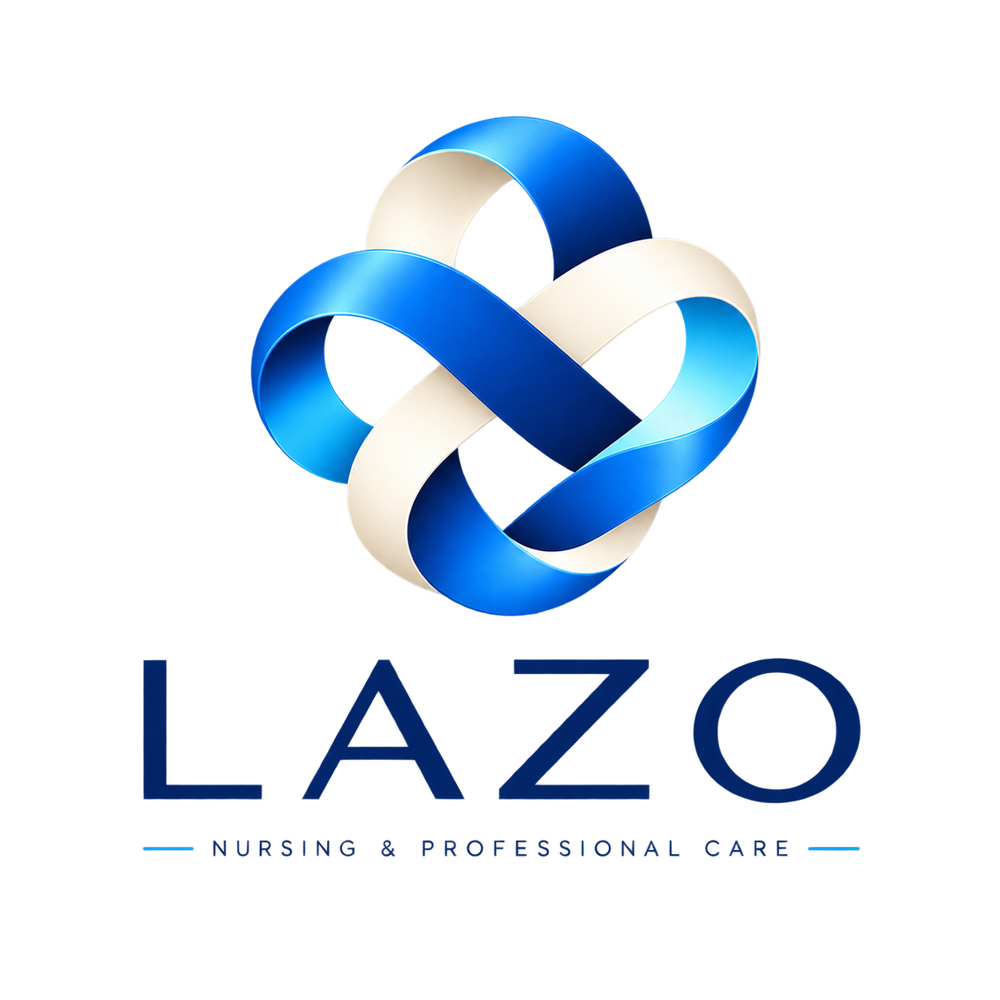
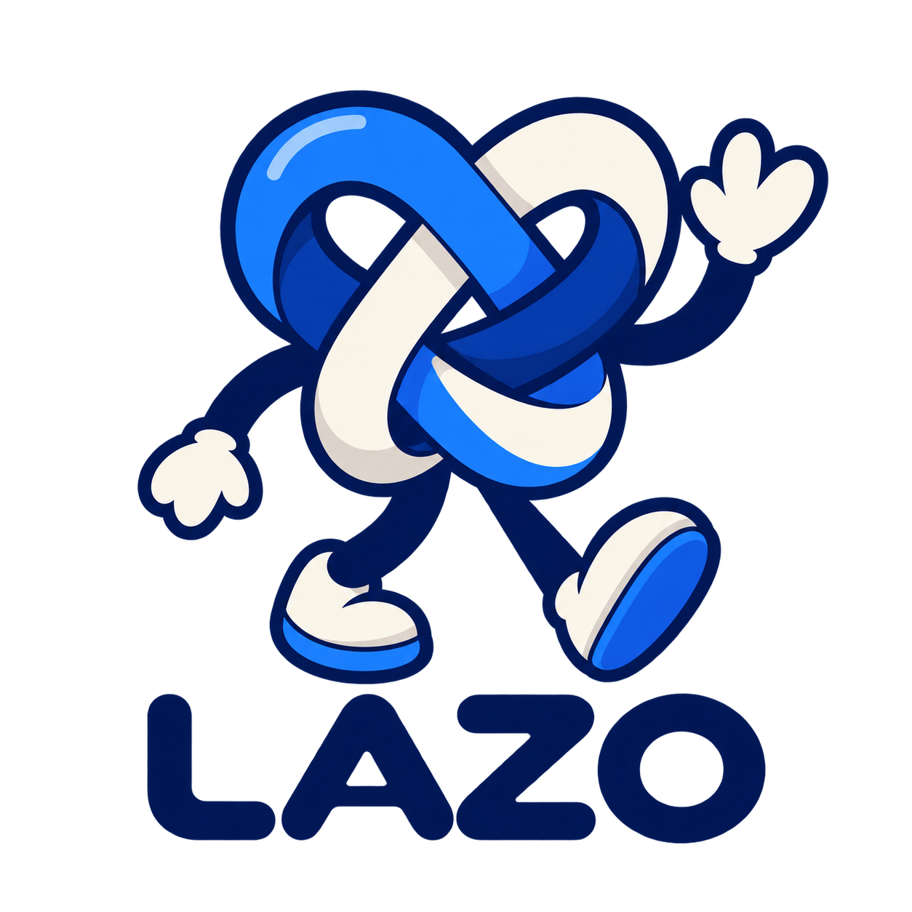

Cuidado domiciliario
Acompañamiento y apoyo en casa para personas que necesitan supervisión, asistencia cotidiana o ayuda con actividades de la vida diaria.
Coordinamos servicios de atención, cuidado y enfermería con perfiles previamente registrados, buscando que cada necesidad encuentre una opción compatible, clara y confiable.

La valoración inicial permite orientar el perfil y la modalidad más adecuados para cada caso.
Acompañamiento y apoyo en casa para personas que necesitan supervisión, asistencia cotidiana o ayuda con actividades de la vida diaria.
Servicios de enfermería sujetos a valoración, perfil acreditado y alcance profesional correspondiente.
Acompañamiento y apoyo durante una estancia hospitalaria, respetando las reglas de la institución y el plan de atención existente.
Apoyo en movilidad, higiene, alimentación, compañía y vigilancia general conforme al nivel de dependencia y perfil requerido.
Acompañamiento durante periodos de recuperación y seguimiento de indicaciones existentes, conforme al perfil seleccionado.
Acompañamiento en hospitalización, posparto y cuidado inicial madre–recién nacido, sujeto a valoración y disponibilidad.
Cuando la necesidad requiere experiencia, formación o competencias específicas, buscamos dentro de la red un perfil compatible. La disponibilidad y el alcance se confirman antes de contratar.
Para la familia debe sentirse sencillo. La organización y los registros ocurren detrás de escena.
Ubicación, fecha, horario y una descripción general de la situación.
Recabamos únicamente la información necesaria para definir el nivel de apoyo.
Orientamos si el caso requiere cuidador, auxiliar/técnico, licenciado o un perfil especializado.
Recibes cotización, duración, alcance, condiciones y forma de pago.
Buscamos dentro de la red a prestadores compatibles que acepten voluntariamente la oportunidad.
Confirmamos inicio, atendemos incidencias operativas y documentamos el cierre.
LAZO busca combinar el trato humano con una operación organizada: valoración, documentación, coordinación y seguimiento.
Solicitar informaciónLa red se construye con expedientes, validación documental y clasificación por perfil.
Horario, ubicación, duración y condiciones importantes se definen antes del inicio.
El servicio no desaparece de nuestro radar una vez que comienza.
La información del paciente se comparte únicamente cuando es necesaria para coordinar y prestar el servicio.

Estamos integrando una red de prestadores independientes en la Zona Metropolitana de Guadalajara. Recibes oportunidades de servicio con información previa y decides cuáles te interesa aceptar.
El registro en el padrón no garantiza un número mínimo de servicios ni ingresos. Los requisitos dependen del perfil.
Si tu caso no aparece aquí, escríbenos y lo revisamos contigo.
La cobertura inicial está enfocada en la Zona Metropolitana de Guadalajara y depende de disponibilidad, horario y perfil solicitado.
Sí podemos revisar solicitudes con poca anticipación, pero la cobertura no se garantiza hasta contar con disponibilidad confirmada. LAZO no sustituye servicios de emergencia; ante una urgencia médica debe activarse el recurso correspondiente.
Depende de duración, perfil requerido, características del servicio y condiciones particulares. Enviamos una cotización antes de confirmar.
Tomamos en cuenta la solicitud del cliente, pero el perfil final debe ser compatible con las necesidades identificadas, la documentación y la disponibilidad real.
La coordinación revisa la situación y, cuando sea viable, busca una sustitución compatible sujeta a disponibilidad y condiciones del servicio.
No. Nuestro servicio se enfoca en la coordinación de cuidados y enfermería programada o solicitada con disponibilidad. Las emergencias deben atenderse mediante los servicios correspondientes.
No necesitas saber qué perfil pedir. Para eso está la valoración inicial.